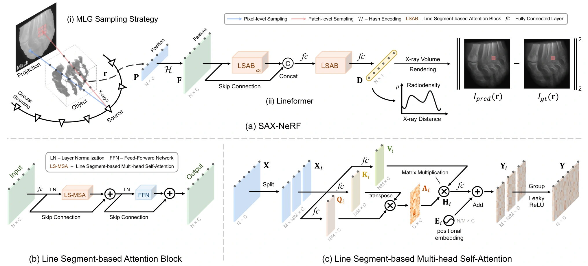
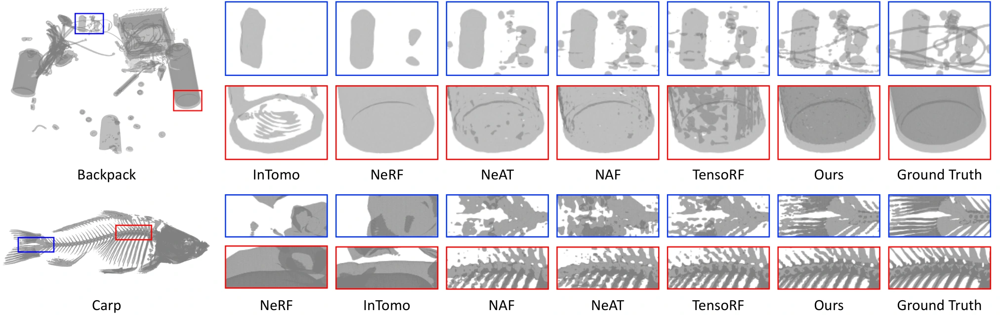
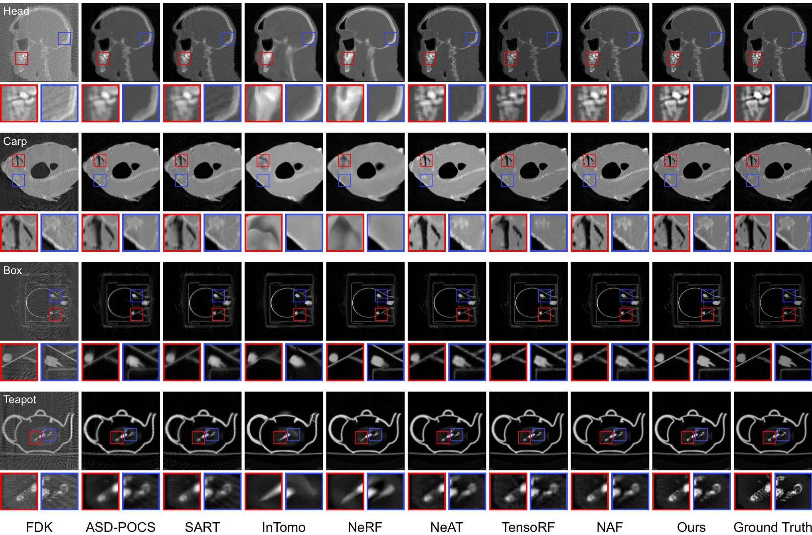
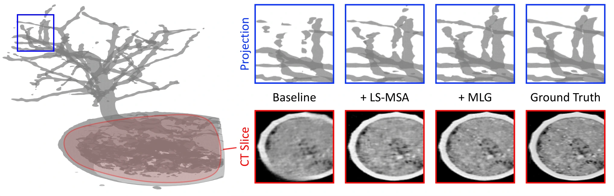

CT Reconstruction During Optimization
Foot
Head
Abdomen
Pancreas
Pelvis
Jaw
Leg
Aneurism
Bonsai
Carp
Backpack
Box
Engine
Teapot
Full optimization to 75,050 or 150,050 iterations using 50 X-ray projections per scene. One frame per iteration through 500, every 10 iterations through 3,000, and every 100 thereafter, including the final iteration.
Interactive CT Volume
Drag to rotate · Scroll or pinch to zoom
Unable to load mesh.
Chest
Interactive X-ray ViewerUnable to load mesh.
Foot
Interactive X-ray ViewerUnable to load mesh.
Head
Interactive X-ray ViewerUnable to load mesh.
Abdomen
Interactive X-ray ViewerUnable to load mesh.
Pancreas
Interactive X-ray ViewerUnable to load mesh.
Pelvis
Interactive X-ray ViewerUnable to load mesh.
Jaw
Interactive X-ray ViewerUnable to load mesh.
Leg
Interactive X-ray ViewerUnable to load mesh.
Aneurism
Interactive X-ray ViewerUnable to load mesh.
Bonsai
Interactive X-ray ViewerUnable to load mesh.
Carp
Interactive X-ray ViewerUnable to load mesh.
Backpack
Interactive X-ray ViewerUnable to load mesh.
Box
Interactive X-ray ViewerUnable to load mesh.
Engine
Interactive X-ray ViewerUnable to load mesh.
Teapot
Interactive X-ray ViewerMeshes extracted from the released SAX-NeRF reconstructed CT volumes.
Abstract
X-rays reveal internal structures that visible-light reconstruction cannot observe. SAX-NeRF learns a neural radiodensity field from sparse X-ray projections. Its Lineformer backbone models dependencies along ray segments, while masked local-global ray sampling combines foreground context with projection geometry. On the 15-scene X3D benchmark, it improves novel view synthesis and CT reconstruction over earlier NeRF methods by 12.56 dB and 2.49 dB, respectively.
Method Overview
Lineformer predicts attenuation coefficients along X-rays. Volume integration produces projections for supervision.

Line Segment-based Transformer
Lineformer embeds sampled 3D positions with a hash encoder and partitions their features into short, ordered segments along each X-ray. A sequence of line segment-based attention blocks models how neighboring samples relate to one another, helping the network distinguish the internal structures traversed by the ray. The resulting features are decoded into point-wise radiodensity values for X-ray rendering.
For segment i and head j, Q, K and V denote query, key and value features; α is a learned scale. The heads are concatenated, projected and combined with positional embeddings. Eq. (9)
Masked Local-Global Ray Sampling
MLG combines dense local patches with scattered global rays to capture both nearby detail and the overall shape of the object. A thresholded foreground mask first identifies informative projection regions. Patch-level sampling selects non-overlapping windows inside the foreground, preserving neighborhood context; pixel-level sampling then draws foreground pixels outside the selected patches, increasing coverage without repeating the same rays.
Here, ℛl contains the rays from local patches and ℛg contains the globally sampled foreground rays. Their union forms the training batch used to supervise the predicted X-ray projections. Eq. (18)

Results on X3D
X3D covers medicine, biology, security, and industry. Results below use 50 training projections per scene.
| Method | Novel View Synthesis | CT Reconstruction | ||
|---|---|---|---|---|
| PSNR ↑ | SSIM ↑ | PSNR ↑ | SSIM ↑ | |
| InTomo | 31.96 | 0.9768 | 30.29 | 0.9189 |
| NeRF | 32.49 | 0.9770 | 32.15 | 0.9354 |
| NeAT | 36.01 | 0.9638 | 33.41 | 0.9447 |
| TensoRF | 37.67 | 0.9712 | 33.78 | 0.9387 |
| NAF | 38.81 | 0.9785 | 34.76 | 0.9535 |
| SAX-NeRF | 51.37 | 0.9994 | 37.25 | 0.9753 |
Averages reported in the CVPR 2024 paper. PSNR in dB; higher is better.
X-ray Novel View Synthesis

Per-scene novel view synthesis results
| Scene | InTomo | NeRF | NeAT | TensoRF | NAF | SAX-NeRF |
|---|---|---|---|---|---|---|
| Jaw | 26.910.9937 | 34.840.9981 | 32.680.9911 | 34.060.9964 | 39.890.9988 | 42.750.9992 |
| Leg | 42.530.9976 | 45.920.9989 | 47.710.9981 | 41.400.9969 | 50.870.9988 | 56.860.9996 |
| Box | 34.650.9963 | 35.670.9985 | 36.140.9957 | 35.430.9977 | 35.980.9955 | 39.670.9992 |
| Carp | 24.040.9648 | 20.620.9467 | 31.260.9620 | 37.350.9973 | 29.600.9593 | 59.880.9999 |
| Foot | 39.480.9979 | 41.050.9989 | 38.240.9963 | 37.730.9929 | 38.350.9913 | 46.640.9994 |
| Head | 34.830.9977 | 29.760.9991 | 27.740.9295 | 34.430.9878 | 30.170.9531 | 53.060.9995 |
| Pelvis | 38.720.9961 | 40.790.9972 | 37.700.9866 | 41.570.9948 | 43.760.9975 | 53.270.9995 |
| Chest | 28.950.9915 | 36.160.9988 | 40.770.9990 | 23.610.9402 | 42.370.9993 | 47.420.9994 |
| Bonsai | 39.260.9953 | 37.670.9983 | 47.020.9985 | 47.800.9989 | 49.030.9989 | 55.330.9995 |
| Teapot | 41.510.9978 | 34.660.9993 | 29.290.9669 | 44.180.9993 | 34.920.9985 | 52.620.9996 |
| Engine | 23.990.9517 | 21.070.9334 | 30.360.8854 | 39.720.9918 | 31.680.9195 | 58.800.9998 |
| Pancreas | 20.030.8537 | 19.850.8560 | 37.530.9017 | 29.240.8031 | 36.230.8844 | 49.880.9978 |
| Abdomen | 27.640.9646 | 24.620.9559 | 26.740.8563 | 27.380.8730 | 37.590.9855 | 54.220.9996 |
| Aneurism | 20.810.9621 | 24.970.9792 | 35.410.9936 | 47.990.9997 | 39.620.9990 | 52.910.9998 |
| Backpack | 36.090.9918 | 39.750.9962 | 41.600.9969 | 43.160.9977 | 42.020.9982 | 47.170.9989 |
| Average | 31.960.9768 | 32.490.9770 | 36.010.9638 | 37.670.9712 | 38.810.9785 | 51.370.9994 |
PSNR (upper) / SSIM (lower). Source: Table 1 of the paper.
CT Reconstruction

Per-scene CT reconstruction results
| Scene | FDK | ASD-POCS | SART | InTomo | NeRF | NeAT | TensoRF | NAF | SAX-NeRF |
|---|---|---|---|---|---|---|---|---|---|
| Jaw | 28.580.7816 | 33.250.9325 | 33.130.9301 | 31.950.9162 | 32.170.9114 | 32.530.9139 | 31.900.8971 | 34.140.9358 | 35.470.9525 |
| Leg | 28.480.6690 | 35.390.9826 | 35.300.9809 | 36.410.9882 | 39.270.9938 | 40.290.9902 | 40.700.9923 | 41.280.9940 | 43.470.9973 |
| Box | 24.140.5616 | 31.270.9226 | 31.200.9200 | 30.590.9140 | 33.580.9494 | 31.580.9298 | 32.170.9314 | 31.780.9309 | 35.330.9602 |
| Carp | 32.320.8177 | 37.630.9777 | 36.890.9682 | 32.470.9493 | 32.990.9529 | 36.850.9576 | 37.520.9687 | 37.930.9711 | 42.720.9902 |
| Foot | 24.530.6000 | 29.980.9208 | 30.290.9296 | 31.430.9127 | 30.030.9072 | 30.860.9221 | 30.460.9153 | 31.630.9363 | 32.250.9403 |
| Head | 26.170.7155 | 35.270.9707 | 34.880.9597 | 31.070.9303 | 34.150.9672 | 35.560.9679 | 35.530.9672 | 36.460.9743 | 39.700.9888 |
| Pelvis | 26.910.6367 | 34.260.9493 | 34.380.9481 | 30.380.9042 | 31.720.9170 | 33.730.9370 | 35.130.9528 | 36.010.9654 | 40.400.9870 |
| Chest | 22.890.7861 | 31.130.9422 | 32.170.9594 | 22.040.7460 | 28.400.8925 | 31.200.9497 | 30.130.9308 | 33.050.9581 | 34.380.9718 |
| Bonsai | 24.530.7276 | 32.700.9529 | 33.020.9600 | 28.900.8811 | 31.770.9382 | 33.200.9476 | 33.470.9521 | 33.850.9585 | 36.510.9761 |
| Teapot | 31.070.8059 | 37.350.9800 | 37.380.9787 | 36.150.9786 | 41.670.9945 | 40.850.9872 | 42.710.9942 | 42.560.9926 | 44.320.9970 |
| Engine | 23.020.5405 | 30.810.9580 | 30.440.9442 | 27.490.9264 | 36.850.9858 | 36.630.9804 | 35.210.9728 | 37.840.9859 | 38.770.9917 |
| Pancreas | 9.6410.1232 | 18.300.7701 | 18.360.7008 | 16.010.7865 | 17.730.8614 | 19.060.8541 | 19.750.7737 | 19.410.8126 | 22.980.9531 |
| Abdomen | 22.630.6030 | 31.460.9231 | 31.400.9170 | 28.050.8754 | 29.710.9049 | 31.140.9060 | 31.510.9073 | 34.450.9501 | 35.010.9598 |
| Aneurism | 28.070.7295 | 34.730.9864 | 34.760.9864 | 30.320.9652 | 31.970.9353 | 35.800.9819 | 37.360.9889 | 37.730.9871 | 41.460.9956 |
| Backpack | 23.840.5351 | 31.340.9309 | 31.320.9294 | 28.770.8753 | 30.280.9192 | 31.900.9345 | 33.160.9362 | 33.260.9501 | 35.970.9688 |
| Average | 25.120.6422 | 32.320.9400 | 32.330.9342 | 30.290.9189 | 32.150.9354 | 33.410.9447 | 33.780.9387 | 34.760.9535 | 37.250.9753 |
PSNR (upper) / SSIM (lower). Source: Table 2 of the paper.
Structural Analysis

BibTeX
@inproceedings{cai2024structure,
title={Structure-Aware Sparse-View X-ray 3D Reconstruction},
author={Cai, Yuanhao and Wang, Jiahao and Yuille, Alan and Zhou, Zongwei and Wang, Angtian},
booktitle={Proceedings of the IEEE/CVF Conference on Computer Vision and Pattern Recognition},
pages={11174--11183},
year={2024}
}